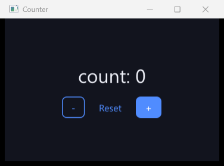
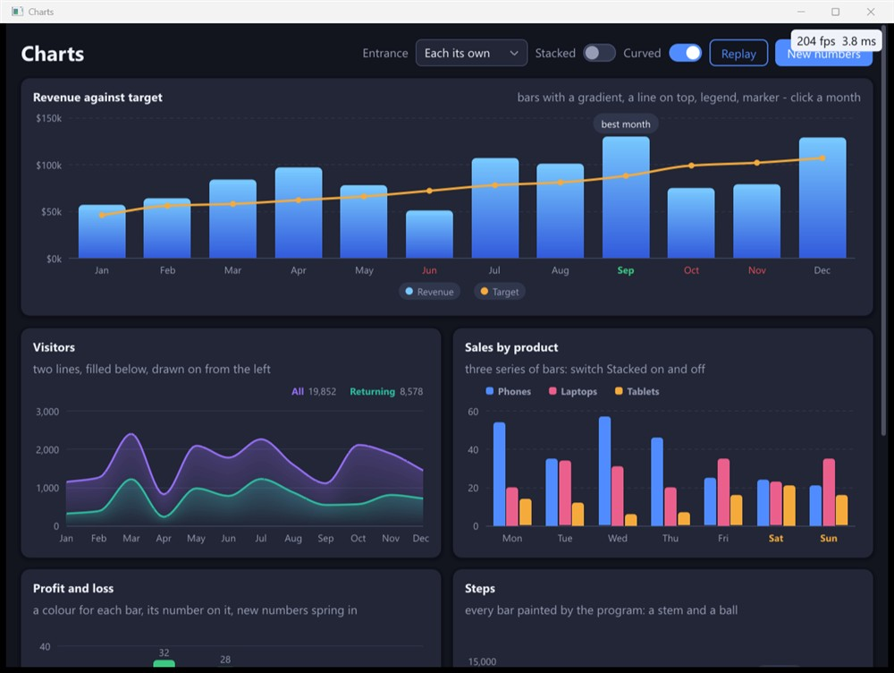
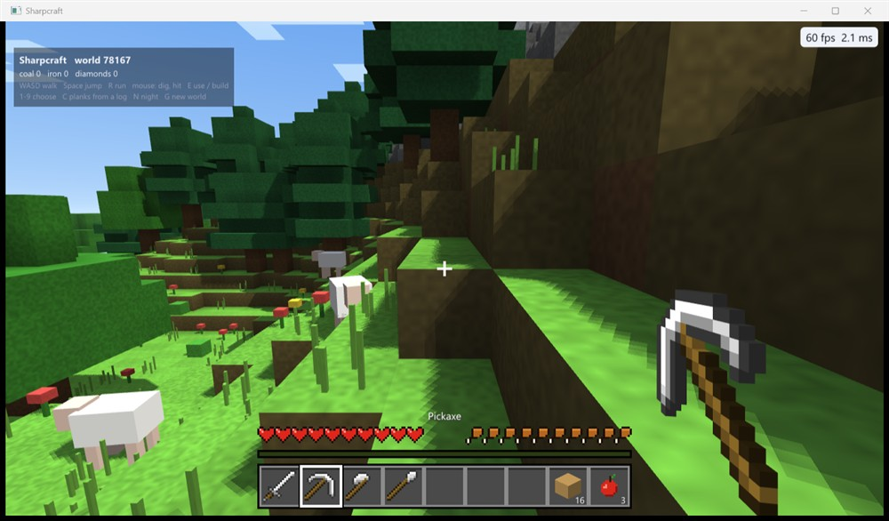

GUI development
std.guikit comes with Sharp. Describe the screen, keep your data in state, and the screen updates when the state changes. Widgets, charts and 3D scenes are all part of it.
Layouts are column and row. Changing count.value redraws the text.
mod app;
import ( std.guikit.* )
class counter base composable {
count := state(0);
override def build() : element {
return column(modifier().fill()) {
text("count: " + count.value).size(32);
row {
button("-") { count.value -= 1; }.outline();
button("Reset") { count.value = 0; }.plain();
button("+") { count.value += 1; };
}.gap(8);
}.center().gap(16);
}
}
def main() {
gui.run("Counter", 360, 240, counter());
}

Bars, lines, axes, legends and animation. Mix series in one chart and style each label.
chart {
bars("Revenue", revenue).gradient(sky, deep).corner(6);
line("Target", target).color(amber).thickness(3).dots(4);
x_axis(months);
y_axis().ticks(5);
grid_lines().dashed();
legend().bottom();
};A scene is a widget like any other, drawn with OpenGL. It has meshes, lights, shadows, fog, a camera and your own shaders, and regular widgets go on top of it.
Sharpcraft is a block-building game written this way: the world is 3D, and the hotbar and hearts are ordinary widgets.
scene {
sky(0x3F86E8FF, 0xC6E4FFFF);
sun().from(0.5, 0.8, 0.3).shadows(60);
box := cube(1, 1, 1).at(0, 0.5, 0).color(0x6AA84FFF);
camera().at(0, 2, 4).look_at(0, 0.5, 0);
on_frame { f: frame -> box.turn(f.time * 40); };
};